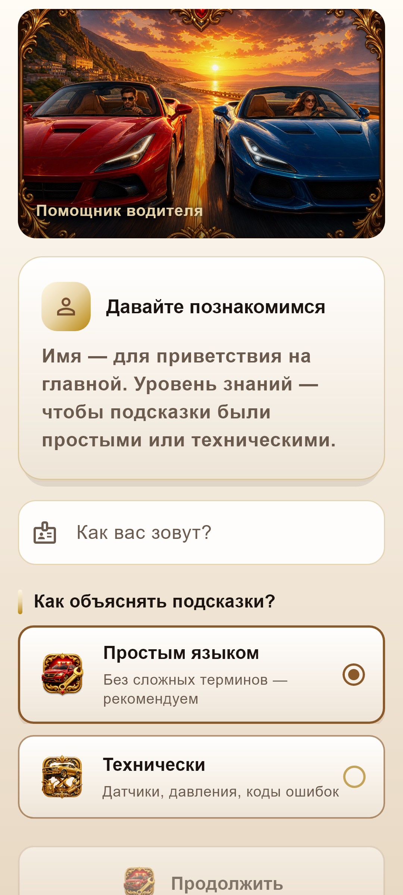
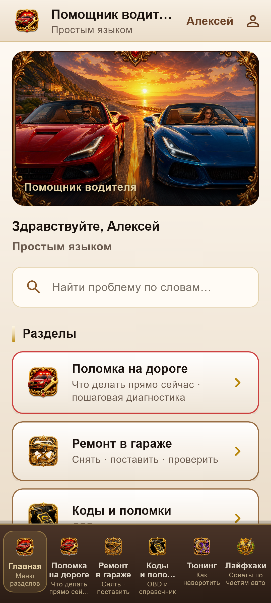
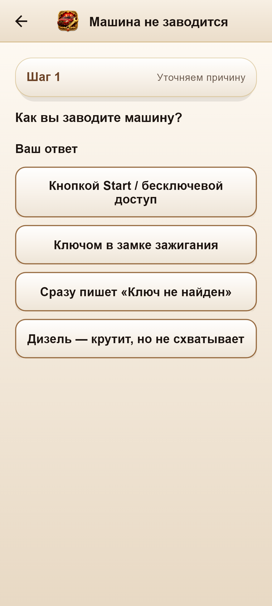
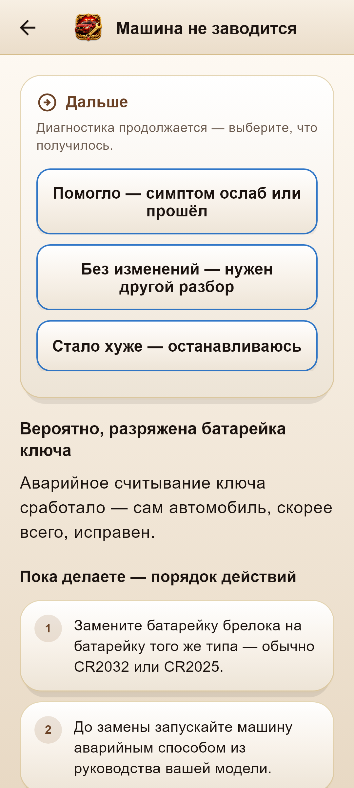
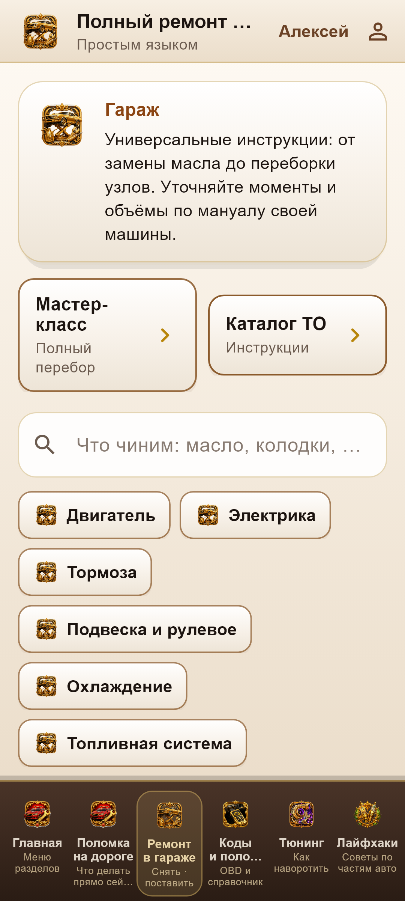
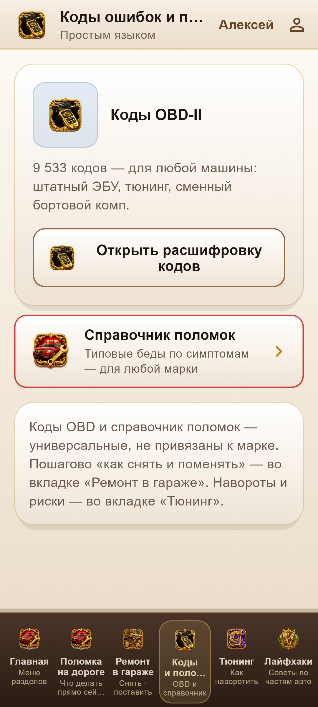
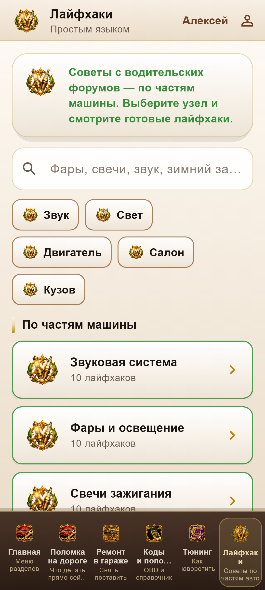

О приложении
«Помощник водителя» — не лента автомобильных роликов, а собранный инструмент для быстрых решений на дороге и спокойной работы в гараже. Когда машина не заводится, сдохла батарейка ключа или нужно понять код ошибки — сценарии уже разложены по шагам.
Материалы носят информационный и справочный характер. Это не замена сертифицированному сервису, диагностическому оборудованию и правилам безопасности. При сомнениях — к специалисту. Приложение для взрослых водителей и тех, кто обслуживает свой автомобиль.
Разделы
- Диагностика запуска Пошаговые ветки: стартер, топливо, искра, аккумулятор — что проверить сначала, что не трогать зря.
- Ремонт в гараже Капремонтные и сервисные сценарии: от простого обслуживания до более серьёзных работ с понятной логикой шагов.
- Коды и поломки Справочник типичных симптомов и кодов — чтобы быстрее сузить круг причин, а не гадать по форумам.
- Батарейка ключа и мелочи Частые бытовые сбои: ключ, питание, «мелочи», из‑за которых машина внезапно «умирает».
- Лайфхаки Практические подсказки на дороге и в поле — когда нужно дотянуть до сервиса или понять, что делать дальше.
Как выглядит
Скриншоты интерфейса приложения







Видео
Кому подойдёт
Тем, кто ездит сам и хочет спокойный чеклист вместо паники на обочине. И тем, кто крутит гайки в гараже: структура сценариев помогает не прыгать между десятью вкладками и скринами из чатов.
В приложении может показываться реклама. Отдельные функции оформляются как покупки через Google Play, если они доступны в вашей версии.
Скачать
Приложение «Помощник водителя» доступно бесплатно в Google Play
для устройств на Android. Package: com.drivershelper.app
Эта страница описывает приложение «Помощник водителя» и ведёт только в официальный магазин Google Play. Здесь нет сторонних APK, «прямых загрузок», редиректов на другие приложения и подмены контента.